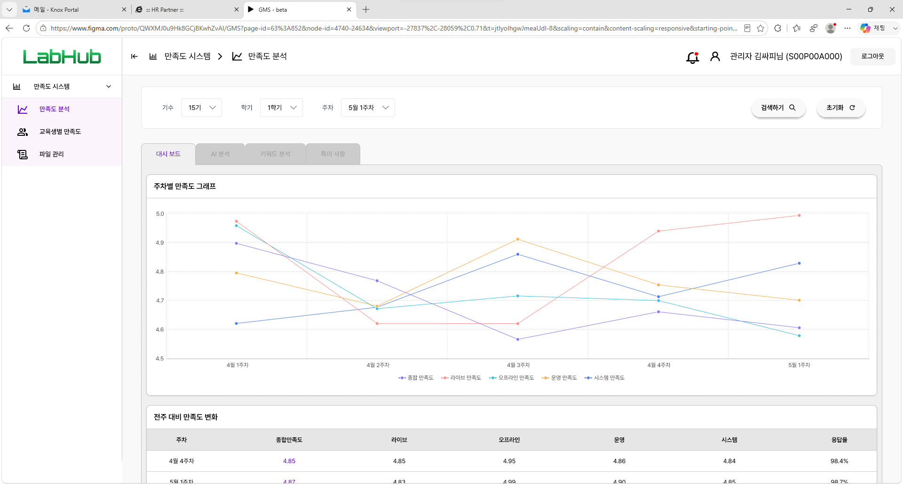
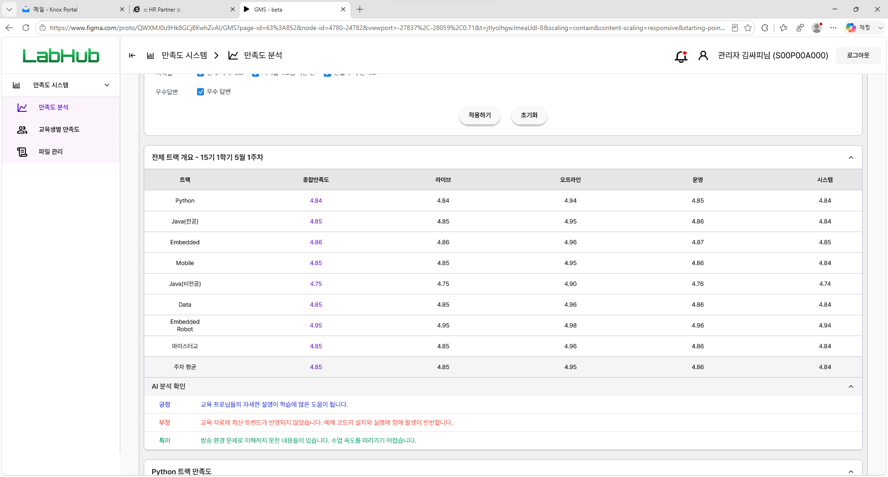
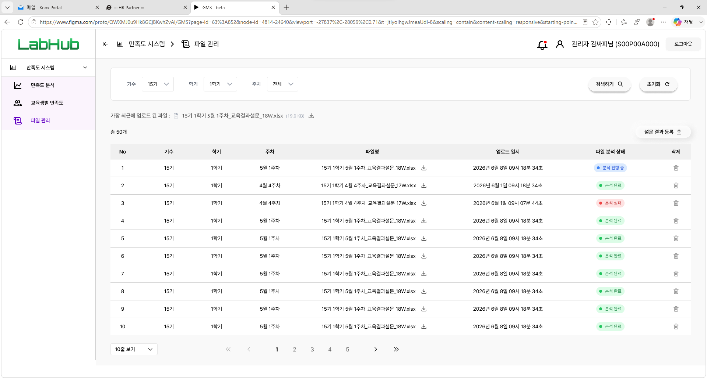
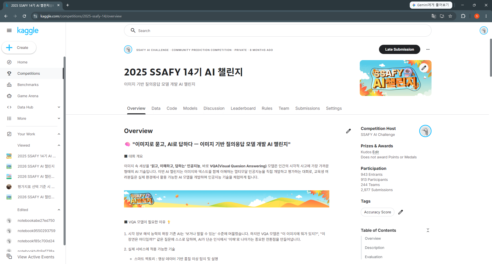
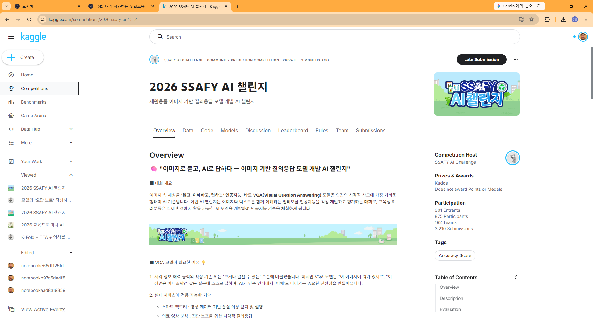

교육 현장에서 문제를 발견하면 기획서로 끝내지 않고 직접 시스템을 만들어 배포합니다.
900명이 동시에 쓰는 AI 피드백 시스템, 리포트 공수를 80% 줄인 LLM 분석 대시보드,
3,000명 규모의 AI 해커톤 — 모두 문제 정의부터 출시·운영까지 완주한 결과물입니다.
🎓
AI 교육
삼성·SK·LG·현대차 B2B 교육과정과 누적 10,000명+가 학습한 AI 콘텐츠, 국가공인 TOPA 자격 검정 체계를 설계했습니다.
🤖
AI 서비스
LLM 자동 채점·피드백, 설문 감성 분석, AI 설문 SaaS까지 — 기획·개발·배포·운영을 혼자서 완결하는 빌더입니다.
매주 쌓이는 수천 건의 교육 만족도 설문을 AI가 대신 읽고, "수강생이 지금 무엇에 불만족하는지"를
대시보드 한 장으로 보여주는 시스템입니다.
PROBLEM
매주 트랙별로 50개가 넘는 설문 엑셀 파일이 쌓이고, 그 안의 주관식 응답 수천 건을 운영진이
직접 읽고 요약해 리포트를 만들었습니다. 반복 수작업에 시간이 갈리고, 정작 중요한 불만 신호는 늦게 발견됐습니다.
SOLUTION
파일 업로드만 하면 파싱→감성 분석→요약→시각화가 자동으로 이어지는 파이프라인을 만들어,
"이번 주 어떤 트랙에서 어떤 불만이 늘고 있는지"를 즉시 확인할 수 있게 했습니다.
HOW IT WORKS — 엑셀 뭉치가 대시보드가 되기까지 4단계
파일 일괄 수집양식이 제각각인 트랙별 만족도 설문(.xlsx) 50+개를 한 번에 업로드합니다.
비동기 파싱서로 다른 시트 구조를 표준 스키마로 정규화해 하나의 데이터셋으로 통합합니다.
LLM 감성 분석주관식 응답 수천 건을 긍정/부정으로 분류하고 핵심 불만·건의사항을 요약합니다.
추이 대시보드주차별·트랙별 만족도 추이와 페인포인트를 시각화해 운영진에 공유합니다.
80%+리포트 작성 공수 절감주 단위불만 신호 조기 감지50+설문 파일 자동 처리
LLM APIPython · Pandas감성 분석데이터 파이프라인Streamlit

트랙별 만족도 추이 대시보드

주관식 응답 긍/부정 자동 분류

설문 파일 일괄 파싱 파이프라인
SSAFY 대규모 Kaggle AI 챌린지
멀티캠퍼스 · 총괄 디렉터
교육생 900명 이상이 동시에 경쟁하는 이미지 질의응답(VQA) AI 경진대회 —
문제 데이터셋 제작부터 채점·리더보드 운영까지 전 과정을 설계했습니다.
PROBLEM
강의만으로는 AI 모델링 실전 감각이 길러지지 않습니다. 900명 규모가 공정하게 경쟁하려면
치팅을 막는 평가 설계, 실시간 채점, 초심자도 출발할 수 있는 진입 장치가 모두 필요했습니다.
SOLUTION
실무형 데이터셋과 평가 지표를 직접 설계하고 Private Kaggle 리더보드로 운영했습니다.
베이스라인 코드를 배포해 진입 장벽을 낮추고, 상위권 코드 검수로 공정성을 지켰습니다.
HOW IT WORKS — 대회가 만들어지는 4단계
데이터셋 구축15,000장+ 이미지를 수집·정제하고 VQA 정답셋으로 가공합니다.
문제·지표 설계태스크 난이도와 평가 지표(Accuracy/F1)를 설계하고 Public/Private 리더보드를 분할합니다.
플랫폼 운영Private Kaggle에서 실시간 채점·리더보드를 운영하고 제출 현황을 모니터링합니다.
검증·시상상위권 소스코드를 검수해 치팅을 걸러내고 최종 순위를 확정합니다.
943명14기 참가 · 2,977회 제출901명15기 참가 · 3,210회 제출95%+교육적 참여율
Private KaggleVQA 데이터셋PyTorch 베이스라인평가 지표 설계

14기 VQA 챌린지 — 943명 참가

15기 재활용품 VQA 챌린지 — 901명 참가
Survora — AI 설문 분석 서비스
LIVE · survora.co.kr개인 프로젝트 · 풀스택 개발/운영
어떤 설문이든 항목을 직접 정의하면 수집 양식·검증·AI 분석·대시보드가 자동으로 구성되는 웹 서비스입니다.
AWS에서 직접 운영 중 — survora.co.kr
PROBLEM
LabHub를 만들며 깨달은 것: 설문 분석 도구는 대부분 설문 구조가 코드에 고정되어 있어,
질문 하나만 바뀌어도 개발자가 다시 손대야 합니다. 교육·카페·병원 등 도메인마다 설문 구조는 제각각인데도요.
SOLUTION
"스키마가 모든 것을 결정한다"는 설계 원칙을 세웠습니다. 사용자가 정의한 설문 스키마(JSON) 하나가
응답 양식, 검증 규칙, LLM 분석 방식, 대시보드 구성까지 전부 자동으로 결정합니다.
HOW IT WORKS — 스키마 하나로 완성되는 4단계
설문 스키마 정의점수 항목(범위 자유)과 주관식 항목(연결형/종합형)을 빌더에서 자유롭게 구성합니다.
템플릿 자동 생성스키마에 맞는 응답 CSV 양식과 검증 규칙이 자동으로 만들어집니다.
AI 분석주관식 응답을 LLM이 감성 분석·요약하고, 점수 항목과 교차 해석합니다.
대시보드스키마 구조 그대로 항목별 통계와 인사이트가 시각화됩니다.
1인기획 · 개발 · 배포 · 운영LiveAWS EC2 프로덕션 운영 중
FastAPIReactMongoDBDockerAWS EC2LLM API
Koggle — 매일 푸는 AI 문제 플랫폼
개인 프로젝트 · 개발 중
"한국의 캐글" — 백준처럼 매일 한 문제씩 푸는 AI 문제와 티어 시스템을 만들고 있습니다.
예측 CSV를 제출하면 숨겨진 정답과 비교해 즉시 채점되고, 문제별 통과 점수를 넘기면 백준식 "해결" 판정과 함께 티어가 오릅니다.
Public/Private 리더보드 분할, 문제 패키지 등록 체계까지 — Survora와 같은 스택(FastAPI · React · MongoDB · Docker)으로 개발 중입니다.
Kaggle식 CSV 채점티어 시스템FastAPIReactMongoDB
AI EDUCATION & PROGRAM DESIGN
AI 교육과 대규모 프로그램 기획
수천 명 규모의 AI 해커톤과 대기업 B2B 교육을 문제 설계부터 운영까지 무사고로 완수해 왔습니다.
3,000명
LG Aimers AI 해커톤
LG그룹의 대표 AI 인재 양성 프로그램. 예선·본선 AI 문항 설계, 자동 채점 검증, 오프라인 본선 운영을 총괄했습니다.
Host: LG AI 연구원 · Elice 재직 시
1,000명
국방 AI 경진대회 MAICON
국방부 주관 대회의 예·본선 모델링 환경 구축과 문항 설계, 현장 운영을 리드했습니다. 국방 이미지 물체 검출 등 실제 군 도메인 데이터를 대회용으로 가공했습니다.
Host: 국방부 · Elice 재직 시
1~3급
TOPA 자격 검정 체계 설계
인공지능 실무 역량 평가(TOPA)의 급수 체계와 검정 문항, 합격 대비 교육 콘텐츠를 설계했습니다. "AI 역량을 어떻게 측정할 것인가"에 대한 답을 만든 일입니다.
국가공인 민간자격 · Elice 재직 시
🏢 대기업 B2B AI 교육 — 삼성 · SK · LG · 현대차가 선택한 교육을 설계했습니다
삼성전자 DS 신입/경력 프로그래밍·AI 교육 — 역량 진단 기반 분반 설계, 현업 활용 만족도 90%+
SK mySUNI CDS 양성과정 · 계열사 현업 데이터 Guided Project
LG 이노텍 Lv.3 AI 교육·역량 평가, LG화학·LGCNS·LG에너지솔루션 전사 AI 교육